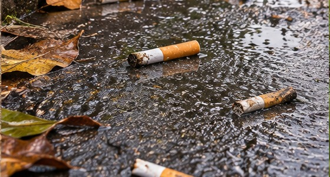
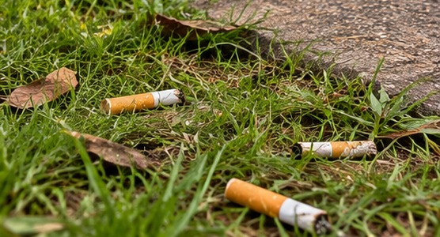

01 · Entenda o cenário
01 · Entenda o cenárioEntenda o problema
Saiba do que as bitucas são feitas e como o descarte irregular afeta a água, o solo e os animais.
Conhecer o temaSUSTENTABILIDADE COMEÇA COM ATITUDE
O que fica no chão não desaparece por mágica. Entenda os impactos das bitucas, descubra como descartá-las corretamente e ajude a construir cidades mais limpas.

POR QUE ISSO IMPORTA?
Bitucas aparecem em calçadas, praças, praias e áreas verdes. A maior parte dos filtros é feita de acetato de celulose, um polímero plástico que pode persistir e se fragmentar em fibras menores. Depois do uso, o filtro também retém resíduos do tabaco e da fumaça, que podem ser liberados quando entram em contato com a água.
Entenda melhor o problema01 | CONHEÇA O TEMA
Conheça os impactos e descubra atitudes que ajudam a evitar que as bitucas cheguem ao ambiente.
01 · Entenda o cenárioSaiba do que as bitucas são feitas e como o descarte irregular afeta a água, o solo e os animais.
Conhecer o tema
02 · Faça a diferençaAprenda cuidados simples para evitar que o resíduo fique nas ruas ou seja levado pela chuva.
Ver orientações
03 · Conheça os efeitosExplore estimativas reunidas pela equipe e compreenda a dimensão do descarte ao longo do tempo.
Explorar os dados02 | O TAMANHO DO DESAFIO
4,5 trilhões
Estimativa de descarte anual no Brasil citada no levantamento da equipe.
14 milhões
Estimativa diária de bitucas espalhadas na cidade, conforme a pesquisa reunida.
ÁGUA E CONTAMINAÇÃO
O levantamento menciona valores de até 1 litro e até 2.500 litros de água por bituca. Consulte as fontes e as condições de cada estudo antes de comparar os resultados.
03 | ATITUDE NO COTIDIANO
O cuidado começa com escolhas simples, informação confiável e responsabilidade compartilhada. Evitar o descarte no chão e nos bueiros ajuda a impedir que esse resíduo seja levado pela chuva até córregos, rios e praias.
Certifique-se de que o cigarro esteja completamente apagado antes de descartar a bituca.
Não jogue a bituca no chão, em bueiros ou em corpos d'água. Procure um coletor apropriado e siga as orientações locais.
Converse sobre o tema e incentive ações de conscientização em sua comunidade.
04 | FAÇA PARTE
Compartilhe uma ideia, conte como o problema aparece no seu cotidiano ou sugira ações de conscientização para sua comunidade.
EXPLORE O BITUCA ZERO